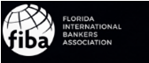
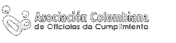
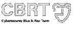
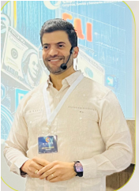

Conferencias, paneles, talleres y casos prácticos.
14 y 15 de mayo de 2026
Congreso Interamericano CIPLADF 2026
Prevención de Lavado de Activos y Delitos Financieros: geopolítica, tecnología y riesgos emergentes en el nuevo mapa del compliance.
00
Días
00
Horas
00
Minutos
00
Segundos
Organizadores y aliados
Instituciones que respaldan CIPLADF 2026.



El congreso
Riesgo global y transformación del cumplimiento.
CIPLADF 2026 se posiciona como el congreso que traduce la geopolítica global en riesgos reales para América Latina.
El encuentro reúne especialistas internacionales en prevención LA/FT, auditoría, gestión de riesgos, ciberseguridad, delitos financieros, regulación y nuevas tecnologías aplicadas al cumplimiento.
Créditos FIBA para mantener certificación AML FIBA.
Con líderes del sector financiero, regulador y empresarial.
Experiencia premium con cóctel, paneles y acceso anticipado.
Beneficios
Conocimiento actualizado y herramientas prácticas.
Acceso exclusivo
Aprende de expertos internacionales sobre tendencias en prevención de delitos financieros, regulaciones, IA y análisis de datos.
Desarrollo profesional
Participa en conferencias, paneles y talleres prácticos con certificado de actualización en prevención LA/FT.
Networking estratégico
Conecta con líderes financieros, reguladores, aseguradores y consultores especializados.
Objetivos
Preparar instituciones ante escenarios de alto riesgo.
Agenda propuesta
Dos días de formación estratégica.
Jueves 14 de mayo de 2026
Riesgo global y transformación del cumplimiento
- Registro y credenciales
- Apertura oficial
- Conferencia Magistral Internacional: Geopolítica, conflictos internacionales y su impacto en el sistema financiero latinoamericano - Nelson Liriano
- Sanciones, OFAC y debida diligencia reforzada en entornos de alta incertidumbre
- Criptoactivos, activos virtuales y nuevas tipologías 2026
- Taller práctico: Inteligencia artificial aplicada al monitoreo transaccional y reducción de falsos positivos - Ramón Guzmán
- Panel reguladores: cooperación interinstitucional ante riesgos sistémicos
Viernes 15 de mayo de 2026
Aplicación estratégica del cumplimiento y gestión de crisis
- Estructuras societarias complejas y riesgos de evasión fiscal en entornos económicos adversos
- Detrás de la estructura: identificación de beneficiarios finales y redes corporativas complejas
- Análisis forense de una tipología real de lavado de activos en el sector financiero y asegurador
- Responsabilidad penal corporativa y riesgo reputacional en la era digital
- El rol del liderazgo femenino en la cultura de cumplimiento en tiempos de presión económica
- El rol de los profesionales no financieros en la prevención del lavado
- Cooperativas bajo presión: cómo gestionar el riesgo y cumplir ante nuevas exigencias regulatorias
Especialistas invitados
Expertos internacionales en cumplimiento y riesgos.
Nicolás Jiménez
Presidente de Asoc. Colombiana de Oficiales de Cumplimiento
República DominicanaExperto en sistemas antilavado de dinero, sistemas anticorrupción, programas de transparencia y ética empresarial.
Carlos Fernández
Presidente de JD Asociación de Auditores Independientes de El Salvador (AIDES)
El SalvadorAuditor de riesgo LA/FT, encargado de cumplimiento, delitos económicos y auditor forense.
Dr. Jorge I Suárez
Director Asociado, Depto. Ciencias Sociales y Justicia Criminal
Puerto RicoConsultor e investigador con trayectoria destacada en justicia criminal y seguridad.
Iliana Meléndez
CEO Prospensa, consultora antilavado
VenezuelaMáster en Derecho Administrativo y Gestión Pública, especialista en prevención de lavado de activos y financiamiento del terrorismo.
Ramón Guzmán
Estratega en gestión de riesgo y compliance
República DominicanaMás de veinte años de experiencia en posiciones de liderazgo en instituciones del sector público y privado.
Katia Morales
Directora de Cumplimiento y Riesgos IDECOOP
República DominicanaMáster en riesgos de prevención LAFT, gestión de riesgos PLAFT, normativos, regulatorios y financieros.
Lillian Báez
Encargada Departamento de Prevención de Lavado de Activos y Financiamiento al Terrorismo
República DominicanaLicenciada en Derecho, experta en prevención de lavado de activos, derecho administrativo y regulación económica.
Armando Díaz
Director de Equipo Nacional de Respuestas ante Incidentes Cibernéticos (CNCS-RD)
República DominicanaIngeniero en sistemas y redes, máster en análisis de inteligencia y ciberinteligencia.
Marcos Kerbel
Director del Comité de Educación Continuada de FIBA y la FIU Florida
Estados UnidosLicenciado en Economía, MBA en Finanzas y profesor de finanzas de la Universidad Internacional de la Florida FIU.

Nelson Liriano
Director de Prevención de Lavado de Activos y FT
República DominicanaLicenciado en Derecho, máster en cumplimiento legal y derecho administrativo, especialista certificado en cumplimiento de delitos financieros.
Comité organizador
Un equipo con trayectoria en cumplimiento y gestión de riesgos.
El comité organizador de CIPLADF 2026 está conformado por expertos con amplia trayectoria en cumplimiento, auditoría, gestión de riesgos y prevención de delitos financieros.
Dicla López
Katia Morales
Enrique Cambier
Nicolás Jiménez
Obtén tu ingreso
Reserva tu participación en CIPLADF 2026.
Precio regularUSD $795
Grupos 5++USD $695
Experiencia VIP+ USD $150
- Acceso a conferencias, paneles y talleres.
- Área de exhibición y networking estratégico.
- Comidas y coffee break AM y PM por 2 días.
- Kit de bienvenida, memorias digitales y constancia digital.
- Participación en premios y rifas.